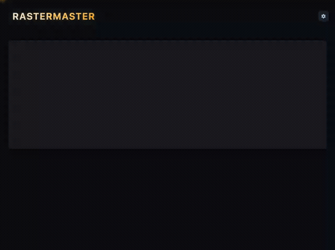

jeffdt_
personal projects
# developer productivity
-
rolomux
A slick tmux session picker that sorts your
sessions into color-coded groups to bring
you terminal zen.
github.com/jeffdt/rolomux

-
boomerang
Tiny GitHub issue manager for tmux to
capture ideas the second they come to
you.
github.com/jeffdt/boomerang

-
teleport
Drop portals around your filesystem to
teleport to a project or worktree from
anywhere.
github.com/jeffdt/teleport


# hobbies & passions
- backlog Fuzzy-search your game library across Steam, Epic, GOG, and Amazon from the terminal. github.com/jeffdt/backlog
-
rastermaster
GCode generator for CNC surfacing with
raster toolpaths.
rastermaster.jeffdt.com

- homskillet discography Interactive audio-visual player for chiptune music. music.jeffdt.com